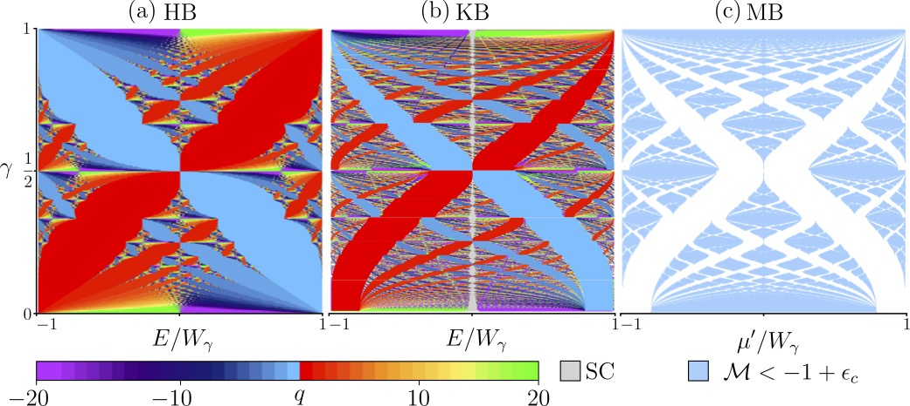
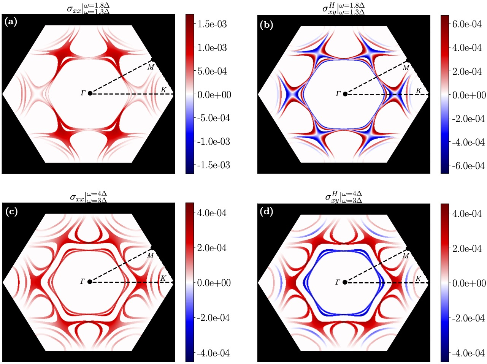
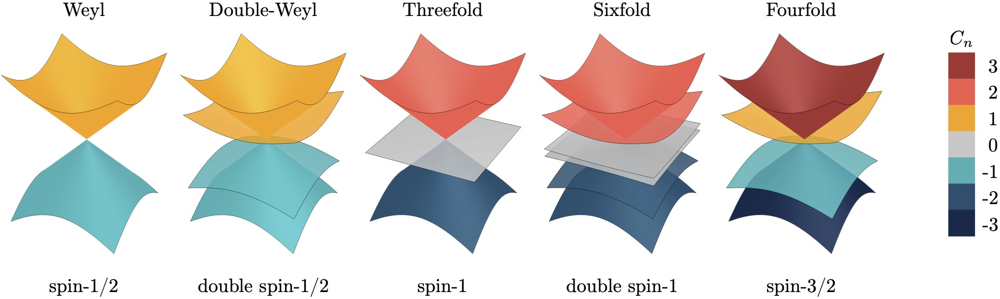

Uncovering the fractal topology of Majoranas in quasicrystals
We recently submitted a paper on the fractal topology of Majoranas in quasicrystals. Some really interesting results! Check it here: arXiv:2602.02796
Theoretical condensed matter physicist working on topological matter, superconductivity, and experimental signatures.
I am a Postdoctoral Research Associate in Dr. Felix Flicker’s group at the H.H. Wills Physics Laboratory, University of Bristol, funded by the EPSRC grant “Exact Results in Aperiodic Systems”. My work lies at the intersection of topological quantum matter, superconductivity, and aperiodic systems, aiming to connect theory and experiment.
My research focuses on various aspects of theoretical condensed matter physics, with a particular emphasis on topological systems and unconventional superconductors. A central part of my work is connecting theory and experiment, with a focus on observables accessible in transport, linear optics, and nonlinear optical experiments. I also have a strong interest in the physics of topological matter in quasicrystals, with a focus on Majorana modes for quantum computing.
Emergence of Majorana modes in quasiperiodic systems, such as 1D Kitaev chains with quasicrystalline symmetries. Fractal spectra and topological phase transitions in aperiodic lattices. Higher-order topological quasiparticles in quasicrystalline systems.

Optical probes of pairing in superconductors, chiral/nematic order, other optical signatures of unconventional superconductivity charactersing the topological phases2RuO4.

Linear and nonlinear optical response (e.g. SHG), circular photogalvanic effect, and transport/optical fingerprints of multifold fermions (CoSi, RhSi).

Notes on research and non‑research topics.
We recently submitted a paper on the fractal topology of Majoranas in quasicrystals. Some really interesting results! Check it here: arXiv:2602.02796
Our most recent work on using light to test topological superconductivity has been published in Physical Review B! It is still in press, but you can find it here: arXiv:2501.10085
Our colleague Julia Hannukainen has written a fantastic piece on her attendance to the Grete Hermann Network workshop. You can read it here: Meeting report: all-female speaker line-up in condensed matter
This is a short selection of representative papers. For a complete list, please refer to my profiles on Google Scholar or arXiv.
Selected recent invitations and conference contributions.
Email: contact@masanchezmartinez.com
Office: Office 3.52, Department of Theoretical Physics
Postal address:
H.H. Wills Physics Laboratory
University of Bristol
Tyndall Avenue, Bristol BS8 1TL, United Kingdom
If you are interested in collaborations, research visits, or Master’s/PhD positions, feel free to email me with your CV and a short description of your research interests.